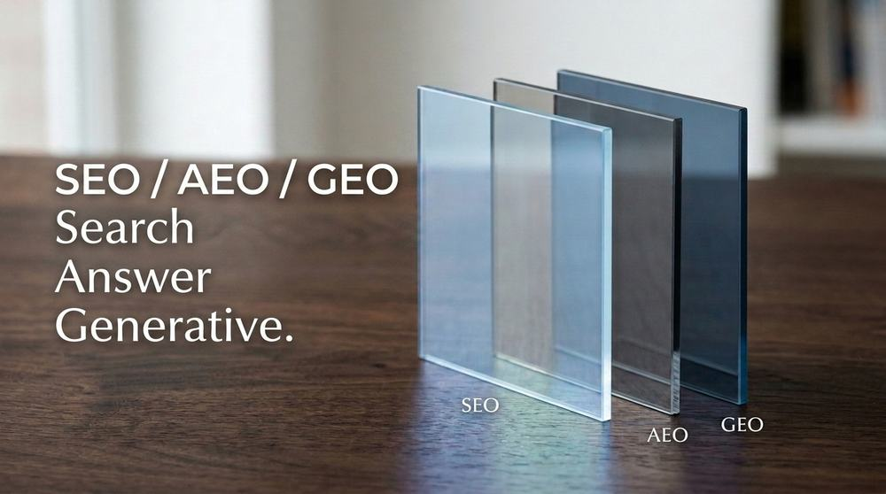
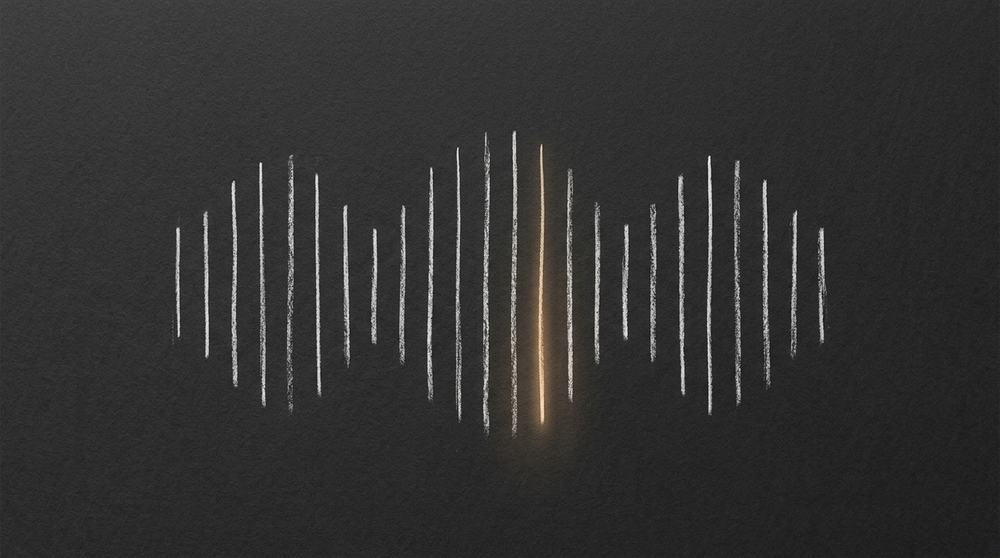

Pendant vingt ans, être visible en ligne a voulu dire une seule chose : apparaître dans les dix premiers résultats de Google. Ce n'est plus tout à fait vrai. Une partie grandissante des recherches ne mène plus vers une liste de liens bleus, mais vers une réponse générée — un résumé d'IA en haut de la page Google, ou directement une conversation dans ChatGPT, Perplexity ou Claude. Pour n'importe quelle organisation, cela veut dire qu'il existe désormais deux jeux à jouer en même temps : le SEO classique, et le GEO — l'optimisation pour les moteurs génératifs.
Cette double porte d'entrée forme le premier des trois piliers d'une présence en ligne, celui qui conditionne les deux autres. À l'échelle d'un territoire, il prend la forme particulière du SEO local.
Le sujet n'est pas anecdotique. Voici ce que disent les chiffres, et ce qu'on peut concrètement en faire.
1. Le zero-click a changé la donne
Depuis l'arrivée des AI Overviews de Google — ces résumés générés par IA qui s'affichent au-dessus des résultats classiques — le comportement de recherche a basculé. Les recherches « zero-click », c'est-à-dire celles qui n'aboutissent à aucun clic vers un site, sont passées de 56 % à 69 % en un an. Sur les requêtes où un AI Overview apparaît, le taux de clic organique s'est effondré de 61 %. Les AI Overviews s'affichent désormais sur environ 25 % des recherches Google, et depuis le 22 juillet 2026 ils sont déployés en France.
Évolution
Part des recherches Google qui ne génèrent aucun clic
Overviews
Overviews
Source : Omnibound, Generative Engine Optimization Statistics 2026
Concrètement : une part croissante de votre public potentiel ne visitera jamais votre site pour trouver sa réponse, l'IA répond à sa place. La question devient : est-ce que l'IA me choisit comme source à citer ou à résumer ?
2. Les visiteurs venus de l'IA convertissent mieux
Bonne nouvelle : ceux qui cliquent quand même, malgré la réponse déjà donnée par l'IA, sont des visiteurs particulièrement qualifiés. Ahrefs a analysé son propre trafic et trouvé que les visiteurs issus de la recherche IA (ChatGPT, Perplexity, Copilot...) ne représentaient que 0,5 % du trafic total, mais généraient 12,1 % des inscriptions — un ratio de conversion environ 24 fois supérieur à celui de la recherche organique classique.
Taux de conversion par source de trafic
Les visiteurs qui arrivent via une IA convertissent nettement mieux
organique
Source : Ahrefs, « Does AI Search Traffic Convert Better Than Traditional Search? », 2025
Autrement dit : moins de volume, mais une intention plus forte. Les gens qui arrivent via une IA ont souvent déjà posé leurs questions, comparé leurs options, et cliquent en connaissance de cause. Ce sont potentiellement des clients ou des visiteurs déjà convaincus.
3. Ce qui fait qu'on est cité par l'IA
La question naturelle est : comment faire pour que ces moteurs génératifs citent son propre contenu plutôt que celui d'un concurrent ? Une étude de référence menée par des chercheurs de Princeton, Georgia Tech et l'Allen Institute for AI (le papier fondateur du GEO, testé sur un benchmark de 10 000 requêtes) a comparé neuf techniques d'optimisation. Les deux qui fonctionnent le mieux sont étonnamment simples :
- Citer des sources — les moteurs génératifs, comme les lecteurs humains, font davantage confiance à un contenu qui s'appuie sur des références vérifiables.
- Ajouter des statistiques — les chiffres précis sont plus facilement repris et cités tels quels dans une réponse générée.
Ensemble, ces deux techniques peuvent augmenter la visibilité d'un contenu dans les réponses génératives de jusqu'à 40 %. D'autres bonnes pratiques s'en rapprochent en logique :
- Des réponses claires et autonomes dès le premier paragraphe (l'IA a besoin de pouvoir extraire une réponse complète sans deviner le contexte).
- Des données structurées (balisage
schema.org) qui aident les moteurs à comprendre qui vous êtes, ce que vous faites, et ce que vous proposez. - Un contenu qui existe réellement ailleurs que sur votre propre site — mentions, citations, présence dans des sources tierces que l'IA croise pour vérifier une information.
Le site que vous lisez applique déjà plusieurs de ces principes : données structurées Person et BlogPosting, réponses directes en tête de section, sources citées. Le GEO est le prolongement naturel d'un bon SEO.
4. Ce que ça change dans la pratique
L'enjeu est concret. Quand quelqu'un demande à une IA « quel festival de musique visiter près de Monaco cet été » ou « où trouver tel service dans ma région », la réponse générée s'appuie sur ce qui est trouvable, structuré et citable en ligne. Sans données structurées, la réponse peut se construire sans vous, ou pire, avec des informations obsolètes glanées ailleurs.
C'est exactement l'angle avec lequel j'ai abordé l'optimisation du site du festival L'Èze Harmonies : penser l'architecture de l'information et le contenu pour deux publics à la fois — les visiteurs humains, et les moteurs (classiques et génératifs) qui les orientent vers vous.
Petit glossaire
- SEO — Search Engine Optimization
- L'optimisation d'un site pour qu'il soit bien positionné dans les résultats classiques des moteurs de recherche (Google, Bing...).
- GEO — Generative Engine Optimization
- L'optimisation d'un contenu pour qu'il soit repris, cité ou résumé par les moteurs génératifs (ChatGPT, Perplexity, AI Overviews de Google).
- Zero-click
- Une recherche qui se termine sans qu'aucun clic ne soit fait vers un site — la réponse est trouvée directement sur la page de résultats.
- AI Overviews
- Les résumés générés par l'IA de Google, affichés au-dessus des résultats de recherche classiques.
- Données structurées (schema.org)
- Un balisage ajouté au code d'une page pour décrire son contenu dans un format que les machines comprennent directement (qui, quoi, quand, où).

Un site à repenser pour les deux publics ?
SEO, GEO, architecture de l'information — je peux auditer votre présence actuelle et vous proposer un plan concret.
Démarrer un projetSources
- Aggarwal, Murahari, Rajpurohit, Kalyan, Narasimhan, Deshpande — « GEO: Generative Engine Optimization », Princeton University / Georgia Tech / Allen Institute for AI, présenté à KDD 2024.
- Ahrefs — « Does AI Search Traffic Convert Better Than Traditional Search? », 2025.
- Omnibound — « Generative Engine Optimization Statistics (2026) ».
- Search Engine Land — « Mastering generative engine optimization in 2026 ».